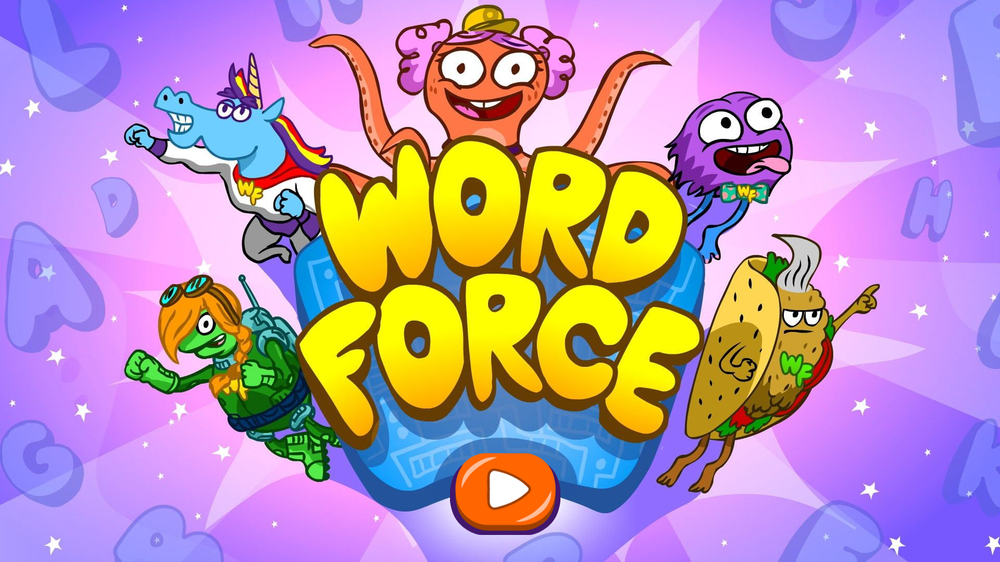

Helping little readers
find their way.
Making foundational literacy more intuitive, accessible, and fun for K–2 learners.

The challenge
WORD Force brings foundational literacy to K–2 learners through 15 games. The original experience had navigation challenges and engagement drop-off. The design question was simple: how could a young learner understand what to do next?
My contribution
I remapped learning flows, simplified interactions, refined the UI, and helped standardize the component library. The work brought research and interface design together across the game experience.
Research that shaped the work
The project included more than 20 usability tests and over 100 session videos, with guardians of children ages 4–7 recruited for testing. Those sessions informed changes to the learning flows and interactions.
Explore the complete process and original artifacts in the original case study ↗.
Back to selected work ↗